01 · The tool
Learning the product by building on it
My lead had me build a slide-generation tool on TeleAgent, China Telecom's internal agent platform, so I'd know the product well enough to demo it live. It turns raw content into on-brand product decks for pre-sales.
The part I'm proudest of is a check that catches the model inventing facts before a deck goes out. A confident wrong number in front of a client is worse than no deck. I set up its on-demand "skills" by trial and error to keep the context window from overflowing, and a company training later taught that exact idea.
02 · Cloud · Delivery
The messier, more honest half
Pre-sales pitches the cloud product. Delivery, where I worked, takes over once a customer buys: training them and fixing things when they break. Most clients are government and enterprise teams who care about the security a state carrier promises. Having built on TeleAgent myself, I could show it working on customer visits instead of reading a script.
In my last week, installing cloud PCs at a township office, people kept bringing us unrelated problems, and I wanted to fix everything on the spot. My colleague said to guide them to fix it themselves, or everyone finds you tomorrow and your own work never gets done. Helping well sometimes looks like holding a boundary.
03 · Monitoring Center
My research logic, running a city
Monitoring Center watches cybersecurity, server rooms (机房), backup power and cable breaks across Dongguan. Alerts cascade down a real hierarchy: HQ, five regions, townships, streets.
Most get auto-assigned straight to the township for a routine fix. Only two kinds reach a person: orders from Guangzhou, and patterns the system finds odd, like the same request repeating in the same region at the same time. That's the shape of my active learning research at E4E: automate the confident cases, route the ambiguous ones to a human. I didn't expect to find it running a city's fault system.

04 · Learning to build
From observing to building
A teammate on Internet Maintenance (互联网维护) walked me through real topology diagrams: intranet versus internet-facing networks, and why a public IP plus fiber is what actually lets a device reach the internet. It was the first time my Huawei networking training showed up at the scale of a province.
He also builds the team's internal web tools and taught me Vue 3 from scratch. To check I'd really understood, I went home and rebuilt my portfolio's skills bar as a Vue component.